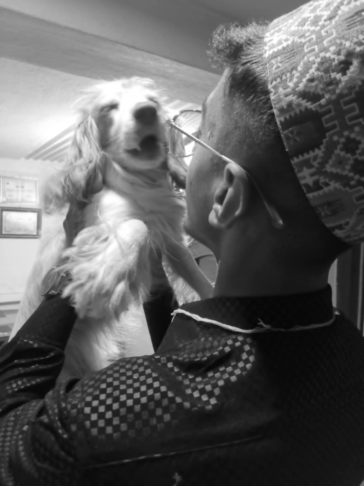

About Me & My Animal Journey 🐾
Hello! I'm a huge animal lover and nature enthusiast. Ever since I was a kid, I’ve loved spending time with animals — from cuddling with dogs to watching birds at sunrise. 🐶🦜
Over the years, I've made many furry (and feathery) friends who’ve become a part of my journey. Each one taught me something special about love, patience, and connection with nature.
My Animal Friends 🐾
- Tashi – my loyal dog and walking buddy 🐕
- Milo – the curious cat who always finds new hiding spots 😸
- Sunny – a parrot who loves to chat and sing 🎶
This site is a little window into my love for animals and how they’ve shaped who I am.